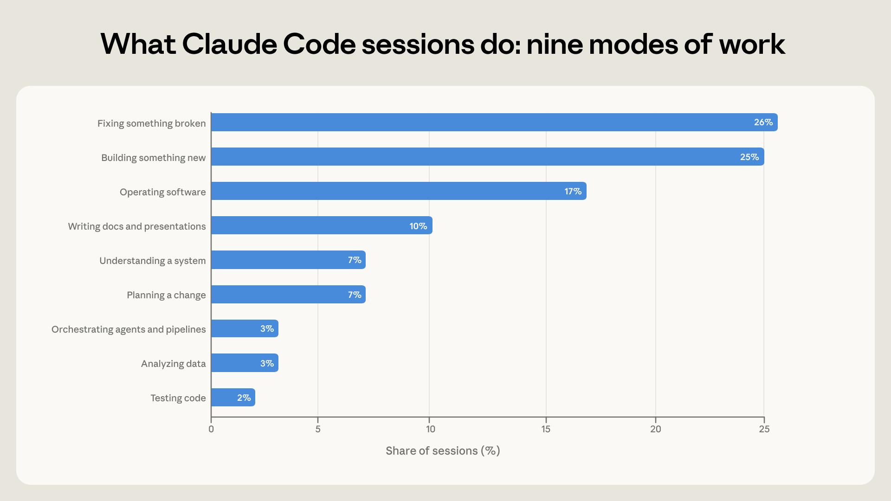
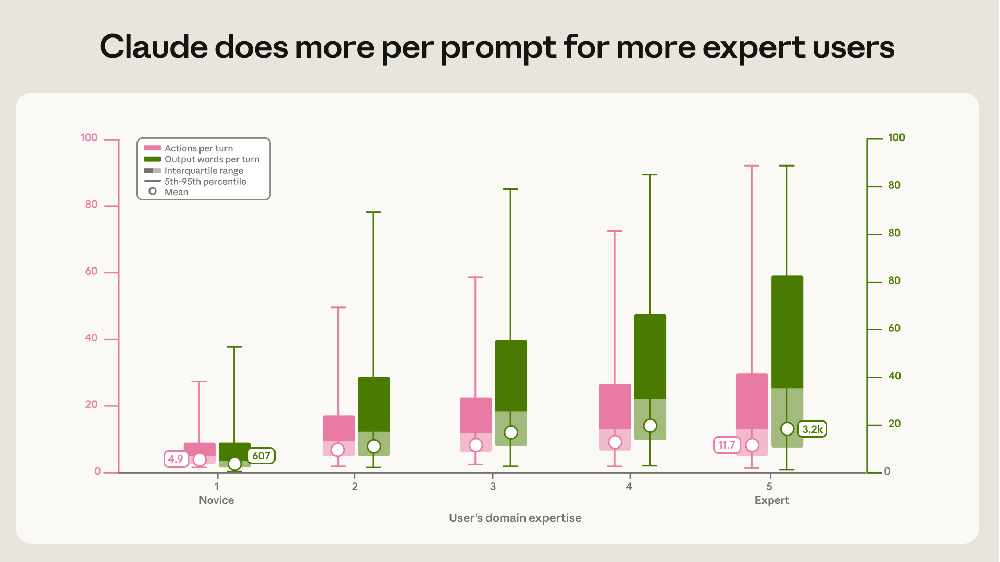
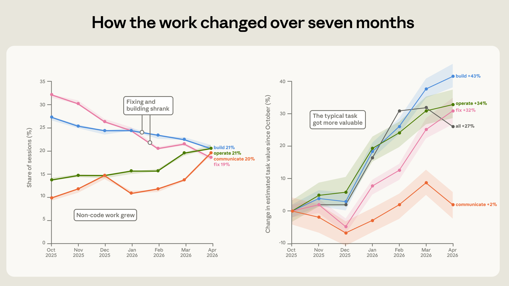

코딩 에이전트가 좋아지면 개발자의 전문성은 덜 중요해질까. 아니면 오히려 더 중요해질까.
Anthropic이 이 질문에 꽤 큰 데이터로 답을 냈다. 2025년 10월부터 2026년 4월까지의 Claude Code 약 40만 개 인터랙티브 세션, 사용자 약 23만 5천 명의 사용 패턴을 프라이버시 보존 방식으로 분석했다. 제목은 Agentic coding and persistent returns to expertise. 직역하면 “에이전트 코딩과 전문성의 지속적 수익” 정도다.
결론은 예상보다 날카롭다.
코딩 에이전트 시대에도 전문성은 사라지지 않는다. 다만 보상받는 전문성의 종류가 바뀐다. 코드를 직접 치는 능력보다, 문제를 정확히 이해하고 에이전트를 제대로 지휘하는 도메인 전문성이 중요해진다.

핵심 요약
Anthropic의 주요 발견은 네 가지다.
- 사람은 계획을, Claude는 실행을 맡는다. 평균적으로 사용자는 계획 결정의 약 70%를 내리지만, 실행 결정은 약 20%만 직접 내린다. 무엇을 만들지는 사람이 정하고, 어떤 파일을 고치고 어떤 명령을 실행할지는 Claude가 맡는 구조다.
- 전문가일수록 Claude가 한 번에 더 많은 일을 한다. 초보자 세션에서는 프롬프트 하나당 Claude 행동이 약 5개, 출력은 약 600단어 수준이다. 전문가 세션에서는 행동 체인이 12개 이상, 출력은 약 3,200단어까지 늘어난다.
- 성공률은 코딩 직업보다 도메인 전문성과 더 강하게 연결된다. 법률, 금융, 과학, 예술·미디어 등 비소프트웨어 직군도 코딩 과제에서 소프트웨어 직군과 거의 비슷한 성공률을 보였다.
- Claude Code 사용은 디버깅에서 엔드투엔드 작업으로 이동 중이다. 7개월 동안 고장난 코드 수정 비중은 33%에서 19%로 줄었고, 소프트웨어 운영·데이터 분석·문서 작성 비중은 커졌다. 평균 과제 가치도 약 25~27% 상승했다.
이건 “개발자가 필요 없다”는 이야기가 아니다. 오히려 반대다. Claude Code가 구현을 많이 가져갈수록, 좋은 문제 정의와 판단력을 가진 사람이 더 큰 산출을 뽑아낸다.
Claude Code에서 실제로 하는 일
Anthropic은 Claude Code 세션을 9가지 작업 모드로 분류했다. 크게 보면 코드 작성·수정·테스트, 소프트웨어 운영, 시스템 이해·계획, 데이터 분석과 문서 작성으로 나뉜다.

분포는 이렇다.
- 새 코드 작성: 25%
- 고장난 코드 수정: 26%
- 테스트·오케스트레이션: 5%
- 소프트웨어 운영: 17%
- 기존 시스템 이해·변경 계획: 14%
- 데이터 분석·문서 작성 등 비코드 산출: 13%
즉 Claude Code는 여전히 코딩 도구지만, 이미 단순 코드 생성기를 넘어섰다. 배포, 설정, 파이프라인 실행, 모니터링, 데이터 분석, 발표자료나 문서 작성까지 이어진다. “코드를 쓰는 도구”라기보다 컴퓨터 앞에서 해야 하는 기술 작업을 수행하는 에이전트에 가까워지고 있다.
분업 구조: 사람은 무엇을, Claude는 어떻게를 맡는다
가장 인상적인 그림은 분업 구조다.

Anthropic은 세션 안의 의미 있는 결정을 두 종류로 나눴다.
- 계획 결정: 무엇을 할지, 어떤 접근을 택할지, 완료 기준은 무엇인지
- 실행 결정: 어떤 파일을 바꿀지, 어떤 코드를 쓸지, 어떤 명령을 실행할지
평균적으로 사람은 계획 결정의 약 70%를 내린다. 하지만 실행 결정에서는 사람의 비중이 약 20%까지 내려간다.
이건 현장에서 느껴지는 Claude Code 사용감과도 맞다. 좋은 사용자는 “이 API의 인증 플로우를 기존 세션 구조에 맞춰 붙여줘. 단, 토큰 갱신 실패 시 기존 에러 핸들러를 타야 하고 테스트는 이 케이스까지 넣어”처럼 목표와 제약을 명확히 준다. 그러면 Claude가 파일을 읽고, 패턴을 찾고, 코드를 고치고, 테스트를 돌린다.
반대로 “이거 좀 고쳐줘”만 던지면 Claude는 많은 결정을 스스로 해야 한다. 될 때도 있지만, 잘못된 방향으로 열심히 달릴 위험도 커진다.
전문성이 높을수록 Claude가 더 많이 움직인다
Anthropic은 각 세션에서 사용자의 과제 전문성을 5단계로 분류했다. 여기서 전문성은 직업 타이틀이 아니다. 그 특정 과제에 대해 얼마나 정확히 알고 있는가다.
예를 들어 시니어 개발자가 처음 Rust를 만지는 세션은 Rust 과제에선 초보일 수 있다. 반대로 회계사가 Python을 몰라도, 월말 정산 규칙과 예외 케이스를 정확히 설명하고 Claude의 실수를 잡아낸다면 그 과제에서는 전문가로 분류될 수 있다.

결과가 흥미롭다.
- 초보 세션: 프롬프트당 Claude 행동 약 5개, 출력 약 600단어
- 전문가 세션: 프롬프트당 Claude 행동 12개 이상, 출력 약 3,200단어
전문가가 더 많은 일을 직접 하는 게 아니다. 오히려 전문가일수록 Claude가 한 번의 지시로 더 멀리 간다. 이유는 간단하다. 지시가 더 정확하고, 검증 기준이 분명하고, Claude가 틀렸을 때 교정도 빠르기 때문이다.
이건 코딩 에이전트 사용의 핵심 감각이다.
에이전트에게 일을 많이 시키는 능력은 “프롬프트를 길게 쓰는 능력”이 아니다. 문제 공간을 정확히 알고, 무엇이 틀린지 판단할 수 있는 능력이다.
성공률도 전문성과 연결된다
Anthropic은 성공을 여러 단계로 나눠 측정했다. 단순히 모델이 좋아 보이는 답을 냈는지가 아니라, 테스트 통과, 커밋, PR, 사용자 확인 같은 검증 가능한 신호를 함께 봤다.

가장 엄격한 기준인 검증 성공률은:
- 초보 세션: 15%
- 중급 이상 세션: 28~33%
부분 성공까지 포함하면:
- 초보 세션: 77%
- 중급 이상 세션: 91~92%
차이는 분명하지만, 또 하나 중요한 점이 있다. 초보에서 중급으로 갈 때 차이가 가장 크고, 중급에서 전문가로 갈수록 증가폭은 완만해진다. 즉 완전한 마스터가 아니어도 된다. 실무적으로 문제를 이해하는 수준만 되어도 에이전트를 꽤 잘 쓸 수 있다.
문제가 생겼을 때도 전문성 차이가 드러난다. 세션이 오류, 실패한 테스트, 반복 시도, 사용자 불만 같은 trouble에 부딪혔을 때, 초보자는 더 자주 포기한다. 전문가는 실패를 보고 원인을 좁히고, Claude를 다시 지휘해서 회복한다.
비개발 직군도 코딩 과제를 성공시킨다
이 리포트가 흥미로운 이유는 “소프트웨어 엔지니어가 Claude Code를 잘 쓴다”에서 끝나지 않기 때문이다. Anthropic은 세션 맥락을 보고 사용자의 직업군을 추정했다. 이때 단순히 코드를 썼다는 이유만으로 개발자로 분류하지 않았다. 예를 들어 변호사가 계약서 폴더에서 누락 조항을 찾는 스크립트를 만들면 법률 직군으로 분류한다.

결과적으로 코딩 과제에서도 여러 직업군이 소프트웨어·수학 직군과 거의 비슷한 성공률을 보였다.
이 대목이 중요하다. 코딩 에이전트는 개발자의 전유물이 아니다. 도메인 전문가가 자기 분야의 문제를 정확히 설명할 수 있으면, 예전에는 개발자에게 의뢰해야 했던 자동화·분석·도구 제작을 직접 밀어붙일 수 있다.
예를 들면:
- 변호사가 계약서 검토 자동화 스크립트를 만든다.
- 회계사가 정산 예외 케이스를 잡는 Python 도구를 만든다.
- 연구자가 실험 로그를 정리하고 시각화한다.
- 마케터가 데이터 추출·리포트 생성 파이프라인을 만든다.
- 운영 담당자가 배포와 모니터링 작업을 자동화한다.
여기서 필요한 핵심은 “for문을 외우는 능력”이 아니라, 무엇이 맞는 결과인지 판정하는 능력이다.
사용 패턴이 바뀌고 있다: 디버깅에서 운영·분석·문서로
7개월 동안 Claude Code 사용 패턴도 변했다.

가장 큰 변화는 디버깅 비중이다.
- 고장난 코드 수정: 33% → 19%
- 소프트웨어 운영: 14% → 21%
- 글쓰기·데이터 분석: 약 10% → 약 20%
초기에는 “깨진 코드 고쳐줘”가 많았다. 시간이 지나면서 “이걸 배포하고 실행해줘”, “데이터를 분석해서 리포트로 만들어줘”, “문서까지 정리해줘” 같은 엔드투엔드 작업이 늘어난다.
과제의 추정 경제적 가치도 올라갔다. Anthropic은 공개 프리랜서 작업 게시물과 비교해 각 세션의 작업 가치를 추정했다. 절대 금액으로 읽기엔 거칠지만, 시간에 따른 비교는 가능하다. 평균 과제 가치는 7개월 동안 약 27% 상승했다. 구축, 운영, 수정 계열 작업은 각각 30% 이상 가치가 올랐다.
이건 모델이 더 좋아지면서 사용자가 더 어려운 일을 맡기기 시작했다는 뜻이다. 도구의 성능이 오르면 사용자는 단순 반복작업이 아니라 더 큰 작업 단위를 넘긴다.
이 리포트가 노동시장에 던지는 메시지
AI 코딩 도구를 둘러싼 논쟁은 보통 두 극단으로 흐른다.
- 개발자는 곧 대체된다.
- 아니다, AI는 장난감이고 실무에는 못 쓴다.
Anthropic의 데이터는 둘 다 너무 단순하다고 말한다.
Claude Code는 이미 많은 실행 작업을 흡수하고 있다. 파일 탐색, 코드 수정, 명령 실행, 테스트, 배포 같은 구현 중심 작업은 점점 에이전트 쪽으로 넘어간다. 이건 개발자 업무의 일부를 실제로 바꾼다.
하지만 성공을 가르는 것은 여전히 사람 쪽에 있다. 특히:
- 무엇을 만들지 정하는 능력
- 좋은 완료 기준을 세우는 능력
- 도메인 제약과 예외 케이스를 아는 능력
- 결과가 맞는지 검증하는 능력
- 실패했을 때 원인을 좁히는 능력
이 능력이 있는 사람은 Claude에게 더 큰 작업을 맡기고, 더 적은 지시로 더 많은 산출을 얻는다. 반대로 문제를 잘 모르는 사람은 같은 모델을 써도 덜 얻는다.
개발자에게는 나쁜 소식인가?
반반이다.
나쁜 소식은 명확하다. 단순 구현만으로 차별화하던 일은 줄어든다. “요구사항을 받으면 코드로 옮기는 사람”의 가치는 압박받는다. 특히 이미 잘 정의된 CRUD, 배치 스크립트, 작은 자동화, 테스트 보강 같은 일은 에이전트가 빠르게 가져간다.
좋은 소식도 있다. 좋은 개발자의 가치가 사라지는 건 아니다. 오히려 시스템을 이해하고, 제품 요구를 구조화하고, 위험을 판단하고, 테스트 가능한 형태로 문제를 쪼개는 사람의 가치는 더 커진다. Claude가 실행을 맡을수록, 개발자는 더 상위의 설계자·검증자·운영자가 된다.
비개발자에게는 더 큰 변화다. 이제 “코딩을 못해서 못 하던 일”이 줄어든다. 하지만 “문제를 몰라서 못 하던 일”은 그대로 남는다. 결국 승자는 자기 분야를 잘 아는 사람이다.
내 해석: 코딩 실력의 프리미엄이 사라지는 게 아니라 재배치된다
이 리포트의 제목이 “persistent returns to expertise”인 이유가 여기에 있다. 전문성의 수익은 사라지지 않는다. 다만 전문성이 놓이는 위치가 바뀐다.
예전에는 구현 지식 자체가 병목이었다. API 호출 방법, 언어 문법, 프레임워크 패턴, 배포 명령을 아는 사람이 일을 가져갔다. 이제 이 중 상당 부분은 에이전트가 담당한다.
대신 새로운 병목은 이런 쪽으로 이동한다.
- 어떤 문제를 풀어야 하는가
- 어떤 제약을 절대 깨면 안 되는가
- 무엇을 테스트해야 진짜 끝났다고 볼 수 있는가
- 모델이 그럴듯하게 틀렸을 때 어떻게 알아차릴 것인가
- 실패 로그를 보고 다음 지시를 어떻게 바꿀 것인가
이건 단순 코딩보다 더 도메인에 붙어 있는 능력이다. 그래서 에이전트 코딩 시대의 이상적인 사용자는 “프로그래밍 문법을 외운 사람”이 아니라, 자기 분야의 문제를 정확히 알고 결과를 판정할 수 있는 사람이다.
Claude Code는 코딩을 덜 중요하게 만드는 게 아니다. 코딩을 더 많은 사람에게 열어주면서, 동시에 진짜 전문성이 어디 있는지 더 선명하게 드러낸다.
원문: Anthropic Research, Agentic coding and persistent returns to expertise